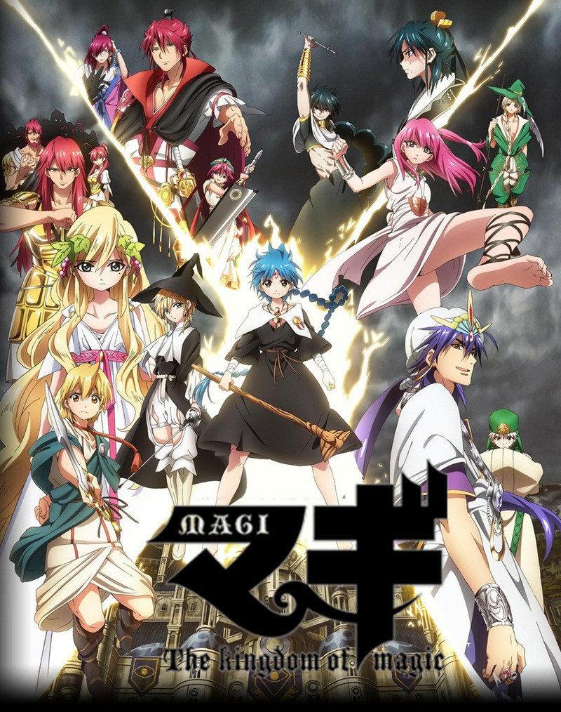

Top 1

My Dress Up Darling
My favorite as of now, I can totally relate to the main characters. An anime that shows the life of a cosplayer.
Top 2
Magi:The Kingdom of Magic
The anime that made me go crazy when I was in grade school. It also portrays the Arabian nights.
Top 3

Jujutsu Kaisen
An anime which revolves around exorcism that has a lot of action packed scenes and very powerful characters. The animation is also godlike.
Top 4

Demon Slayer:Kimetsu no Yaiba
The story revolves around Kamado Tanjiro and his sister, Nezuko. They are after Muzan Kibutsuji, The King of demons
Top 5

Guilty Crown
If you like apocalyptic theme and politics, This is the perfect anime for you. It has great music and action scenes.
Top 6

Hunter X Hunter
A classic series. Gon, Killua, Kurapika and Leorio will take you to the hunter world where everyone has it's own principles.
Top 7

Nisekoi
A series where a girl promised her love to a boy during their childhood. When they grew up, Fate has flowed over their life again.
Top 8

Black Clover
An anime that takes place in a wizard world. Asta and Yuno will venture into the Clover Kingdom to know more about magic.
Top 9

7 Deadly Sins: Nanatsu No Taizai
Elizabeth came to look for the legendary group, Fate has given her the greatest chance by meeting the Captain first, Meliodas.
Top 10

Kaguya Sama:Love is War
A comedy-romance anime that will make you laugh and skip a beat. Meet Kaguya and Shirogane, the two main characters that won't confess their love to each other.